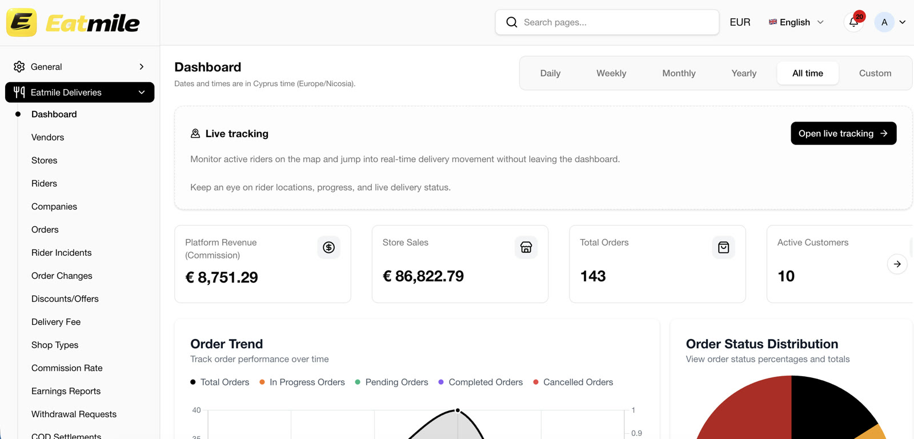
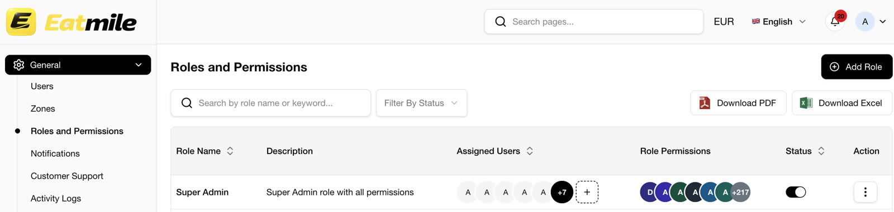
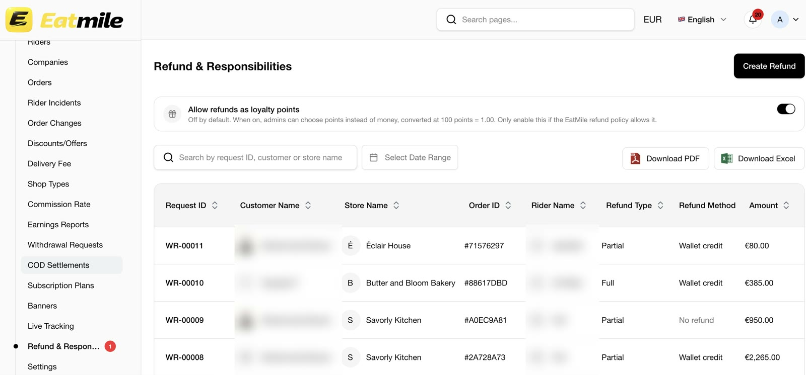
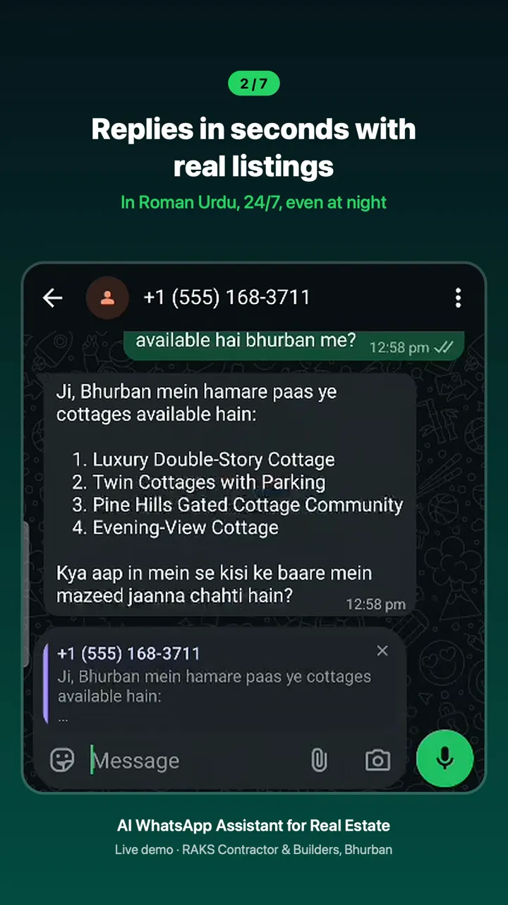
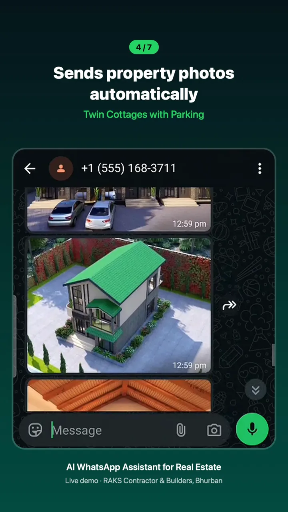
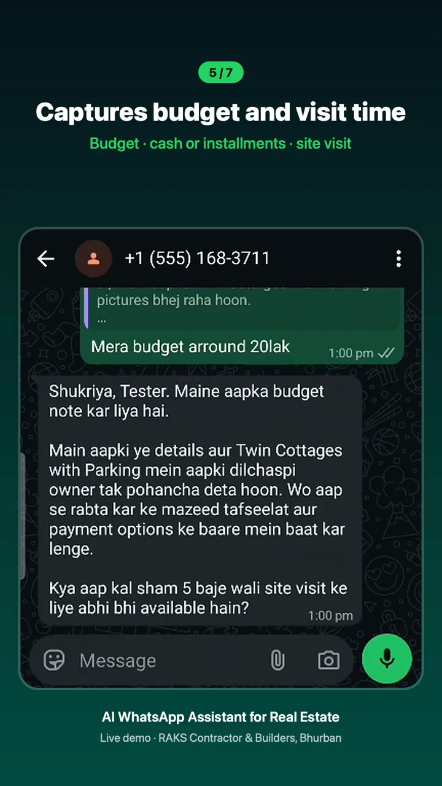
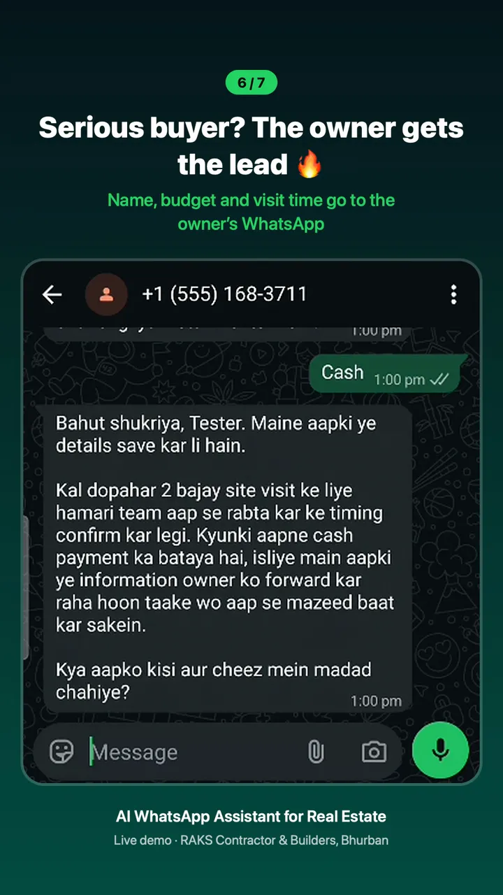
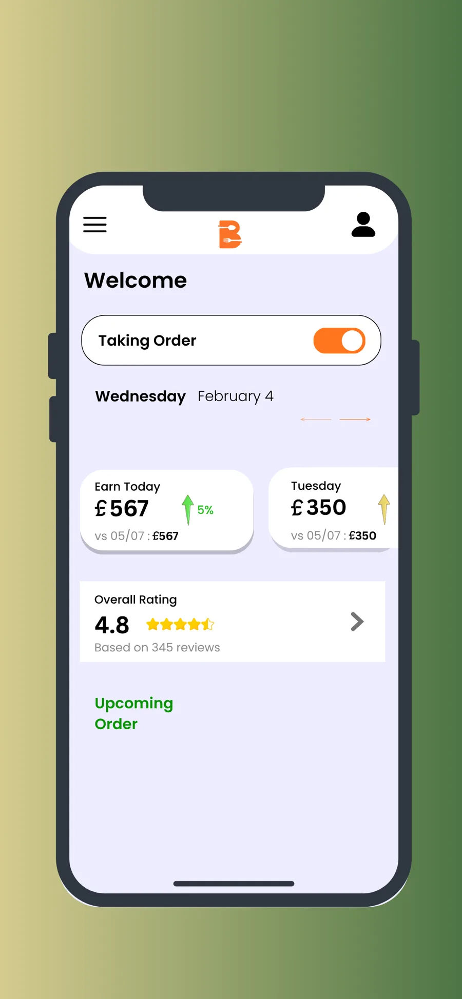

Back-office software businesses run on every day: dashboards, orders, payments, refunds, reports, staff roles and permissions. All of it is built in Next.js + TypeScript on NestJS / GraphQL APIs, and all of it is live in production. Customer and rider names are blurred for privacy.
Eatmile — Super-Admin Panel
Next.js 16React 19shadcn/uiRechartsLive
The operations and finance panel for a delivery platform in Cyprus: vendors, stores, riders, orders, refunds, settlements, withdrawals, commission, reports, staff and permissions.

Dashboard: revenue, sales, orders and active customers with Daily / Weekly / Monthly / Yearly / Custom filters, order trend and order status charts.

Roles and permissions: create roles, assign staff, choose which pages and actions each role can use, and switch roles on or off. Lists export to PDF and Excel.

Eatmile — Refunds: searchable, sortable records with date-range filters, full and partial refunds paid as wallet credit or loyalty points, and PDF / Excel export.
Built for this panel: the rider incident board, COD settlements, withdrawal requests with pending counts, rider activity insights, activity logs, and company and tax settings.
One consistent order-code format across every screen, so staff and customers always refer to the same number.
Yalla & Sipp — Admin Panels and Customer Websites
Next.js 14–16GraphQLTanStack Querynext-intlLive
Yalla Admin v2: per-staff permissions (each staff member lands only on pages they're allowed to see), delivery pricing, zone management, and live support-ticket chat over GraphQL subscriptions.
Sipp admin: real-time rider tracking map, restaurant financial reports with refund and reconciliation columns, and fixes for 30+ issues from a client QA audit.
Customer websites on the same API as the admin: live order tracking, saved cards, coupons, order notes, and multi-language support.
My own product, live for a real-estate business. It answers customers on WhatsApp 24/7 in Roman Urdu, Urdu and English (voice notes too), shows only real listings and never invents prices, sends photos, saves each lead (budget, cash or installments, visit time), and sends serious buyers to the owner's WhatsApp.

Replies with real listings

Sends property photos

Captures budget and visit time

Owner gets the lead
Borku Partner Hub & Lumi — Production Apps
React NativeGraphQLAI tool callingApp Store · Google Play
Borku's store app handles stock, menu, a live order queue and earnings. Lumi's AI assistant books a ride straight from a chat message.

Borku Partner Hub: orders, earnings, ratingsBorku: live order status stepsLumi: AI assistant booking a ride